Inca Road
The royal highway of the Inca, threading the high Andes around Cusco.
There are 810 km between the two ends of the Inca Road, and Cusco is the far one. You begin at Plaza de Armas, Cusco. Watch Walks moves you along it with the steps you already take, so it's about 32 weeks at 5,000 steps a day. Here are its 25 landmarks, in the order you meet them, photographed and written up.
- 810km end to end
- 25landmarks
- 32 weeksat 5,000 steps a day
- Cuscofinishes at

The landmarks of Inca Road
25 landmarks, in walking order. Each photograph is by the person credited beneath it, used as they licensed it.
-
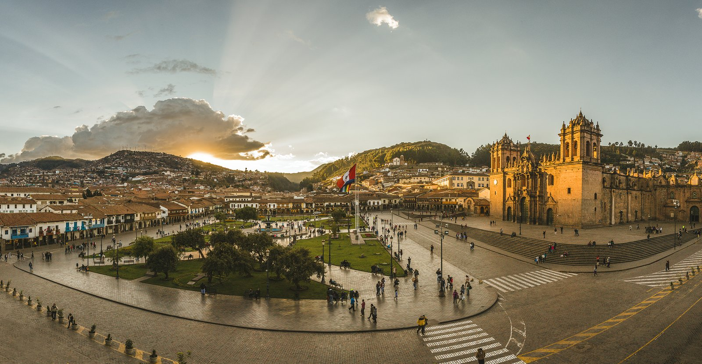
Photo: FrederickCusco · Wikimedia Commons, CC BY-SA 4.0 Plaza de Armas, Cusco
Cusco's Plaza de Armas was the navel of the Inca world, the point where all four great roads of the empire began. Six hundred kilometres of Qhapaq Ñan, the royal road, unspool from this square at 3,400 metres. Its cobbles were laid for the chasqui runners who carried messages to the empire's distant edges.
-
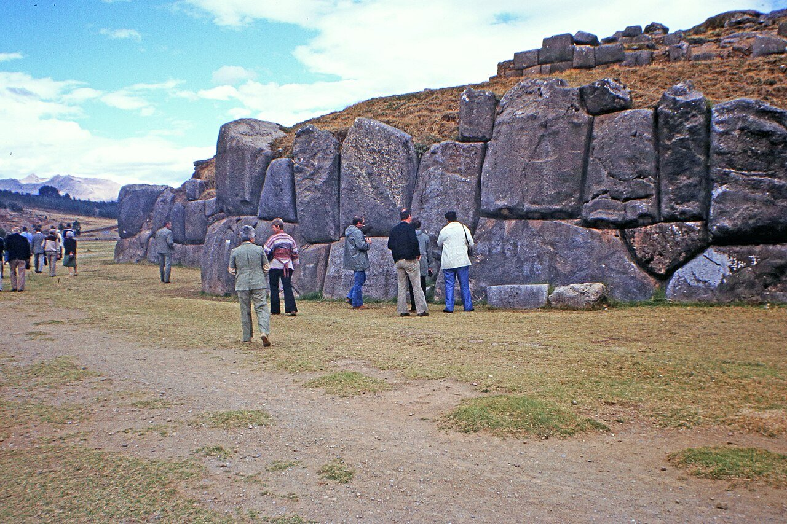
Photo: W. Bulach · Wikimedia Commons, CC BY-SA 4.0 Sacsayhuamán
Above the city stand the zigzag walls of Sacsayhuamán, built from limestone blocks weighing up to 120 tonnes and fitted so tightly no blade slips between them. How the Inca moved and set these stones without iron tools or the wheel remains uncertain. From here the Antisuyu road runs north toward the Sacred Valley.
-
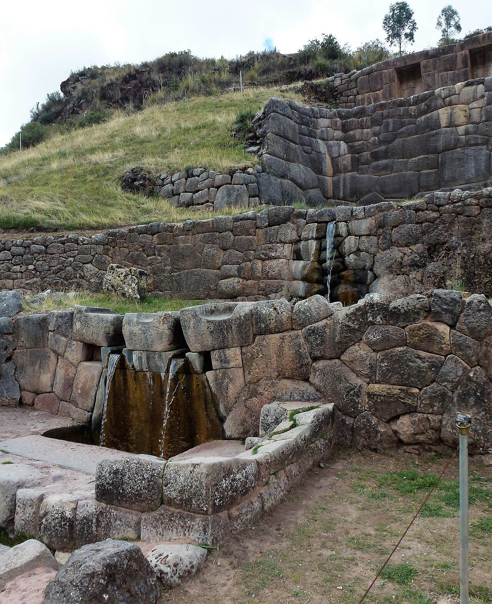
Photo: Pierre André Leclercq · Wikimedia Commons, CC BY-SA 4.0 Tambomachay
Water still runs from a spring through fitted-stone channels at Tambomachay, falling in two clear jets that have not stopped in five centuries. Known as the Baths of the Inca, the site was more likely a shrine to water itself, a place of ritual purification on the road north out of Cusco toward the Sacred Valley.
-
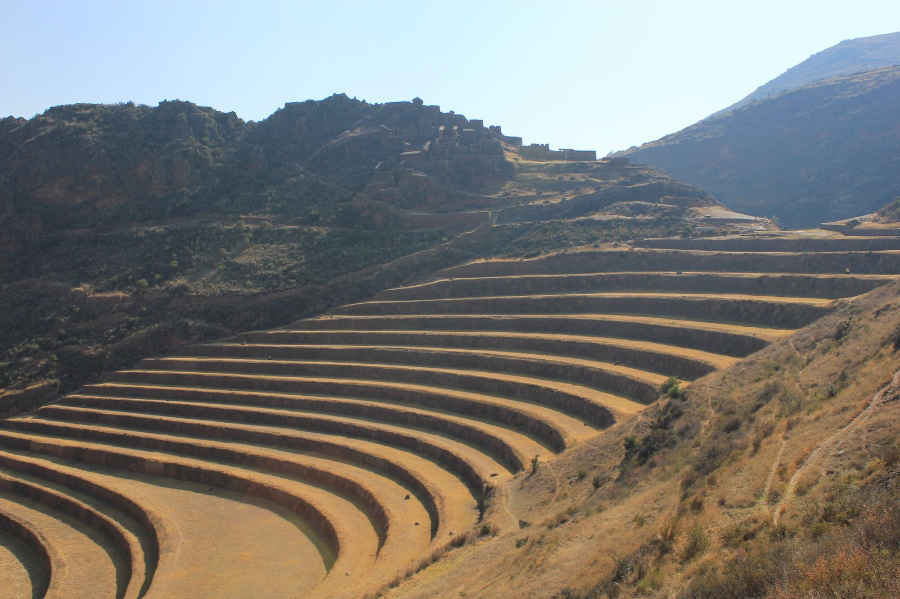
Photo: Laslovarga · Wikimedia Commons, CC BY-SA 4.0 Písac
Písac's Inca terraces fan up the mountainside in green steps above the Urubamba River. The hilltop citadel holds a temple precinct and one of the largest Inca cemeteries known, its tombs cut into the cliff face. A famous craft market fills the lower town, and the river road runs on downstream from there.
-
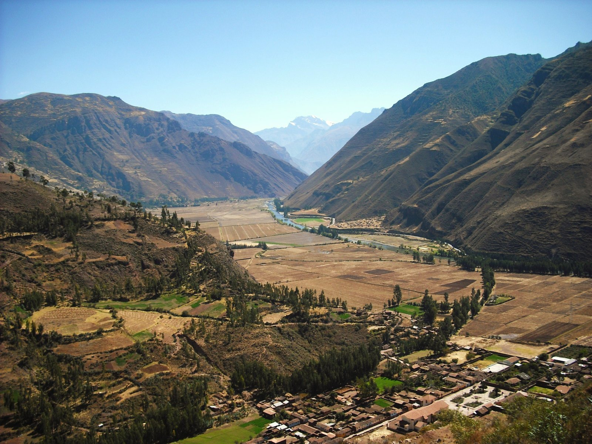
Photo: Charles Gadbois · Wikimedia Commons, CC BY 3.0 Urubamba
On the green floor of the Sacred Valley, the Urubamba River braids through fields of maize beneath snow-capped Chicón. This riverside town has long been the valley's market heart, and its gentler altitude makes the air easier than in Cusco. Orchards and adobe walls line the way before the road climbs again toward Ollantaytambo.
-
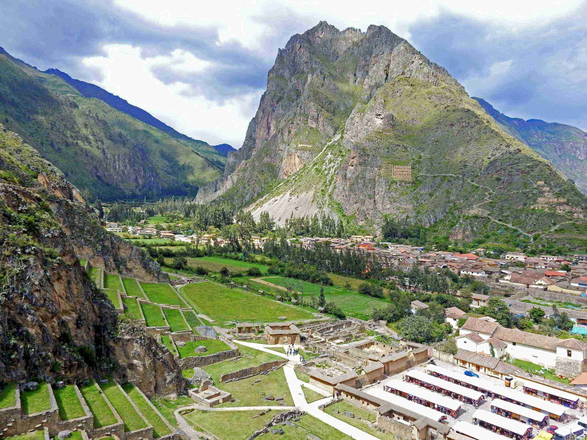
Photo: FLASHPACKER TRAVELGUIDE · Wikimedia Commons, CC BY-SA 2.0 Ollantaytambo
Ollantaytambo is a living Inca town, its original walls and water channels still gridding the streets. Above rise the great fortress terraces where Manco Inca beat back a Spanish cavalry charge in 1537, one of the few Inca victories of the conquest. The unfinished Temple of the Sun stands at the top, where the road turns south out of the valley.
-
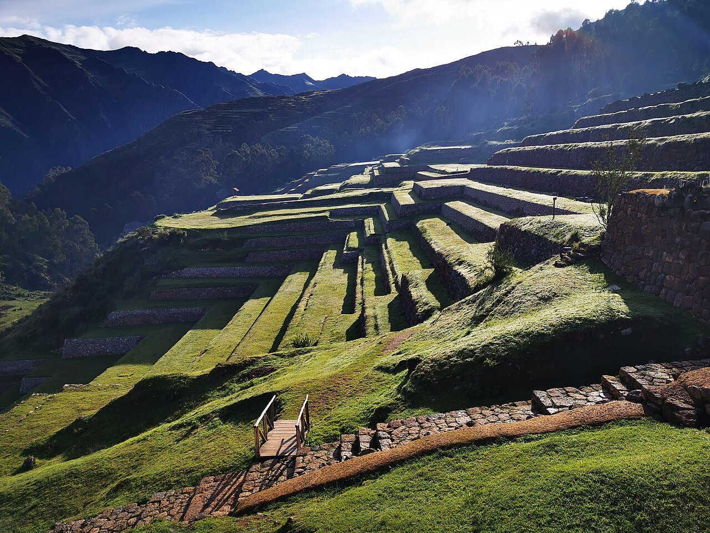
Photo: GeraldFoster · Wikimedia Commons, CC BY-SA 4.0 Chinchero
At Chinchero, back up on the high plain, a Spanish colonial church sits squarely atop the palace of Túpac Inca Yupanqui, its interior glowing with old Cusco-school paintings. Broad Inca terraces fall away below the square, and on market days weavers spread their reds and ochres across the stones. Local tradition holds this windswept town to be the mythical birthplace of the rainbow.
-
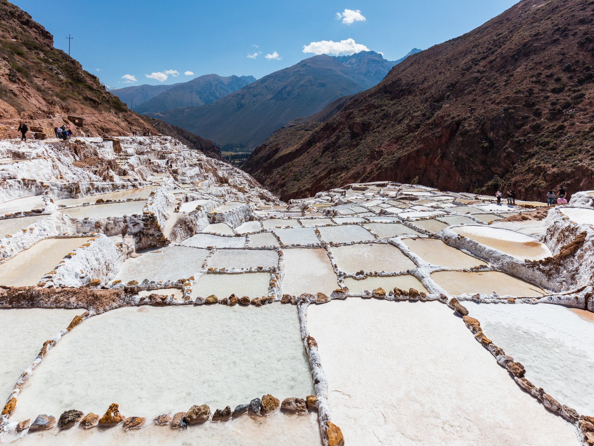
Photo: Diego Delso · Wikimedia Commons, CC BY-SA 4.0 Salt Pans of Maras
Thousands of shallow pans step down the hillside at the Salineras de Maras, fed by a warm salt spring the Inca tapped over five centuries ago. Families still harvest pink salt here the old way, each pool owned and worked by hand. The white basins blaze against the brown valley, terraced pool upon pool down to the ravine floor.
-
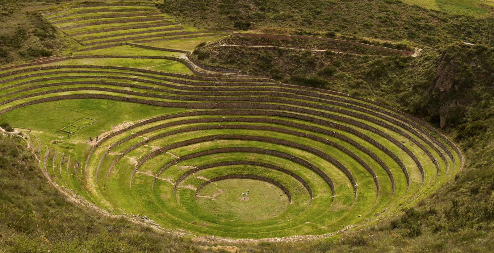
Photo: McKay Savage from London, UK · Wikimedia Commons, CC BY 2.0 Moray
At Moray, vast concentric terraces sink into the earth like a green amphitheatre. The Inca built these rings as an agricultural laboratory: the temperature between the top and the bottom can differ by as much as fifteen degrees, letting them test crops across many climates in a single place. The western road leads on from the rim.
-
Quillarumiyoc
On the old Cusco-to-Abancay road stands a quiet shrine where a great boulder bears a crescent worked into the living rock. This was Killarumiyoc, the stone of the moon, a place of worship for Mama Killa, the moon mother of the Inca firmament. Water still threads through fine channels among the terraces before the road drops into Apurímac country.
-
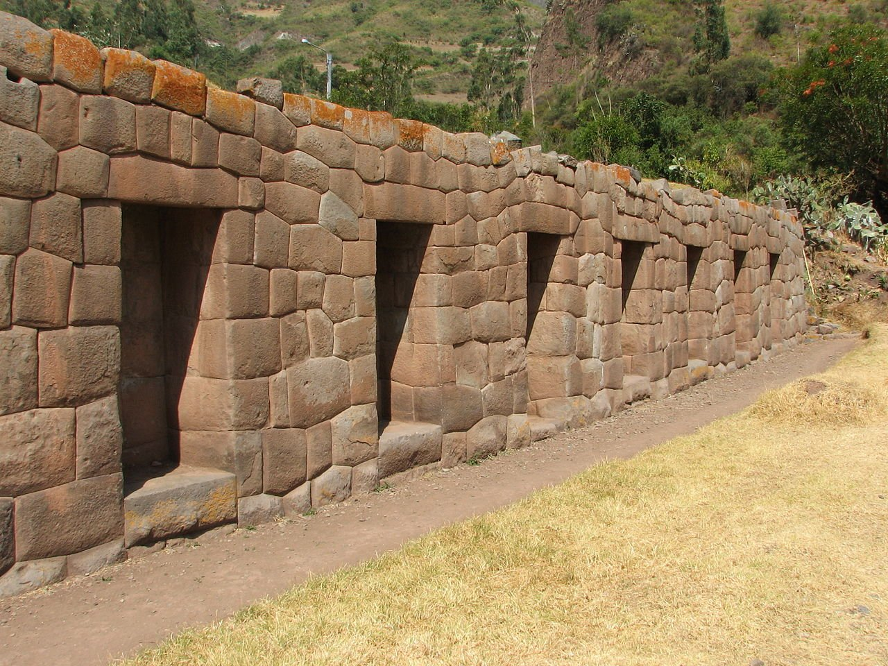
Photo: AgainErick · Wikimedia Commons, CC BY-SA 3.0 Tarawasi, Limatambo
Near Limatambo sits Tarawasi, a tambo and ceremonial platform on the royal road west toward Chinchaysuyu. Its retaining wall is fine polygonal masonry studded with stones cut into raised diamond shapes, a flourish found at only a few Inca sites. The place served as a waystation for travellers and chasqui runners on the road into Apurímac.
-
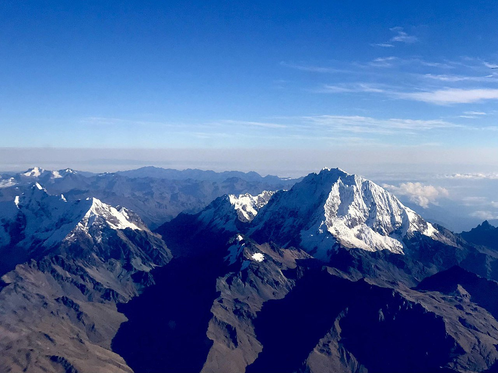
Photo: Calovh · Wikimedia Commons, CC BY-SA 4.0 Chonta Condor Viewpoint
A level path runs along the rim of the Apurímac canyon to a viewpoint more than three thousand metres above the river. In the afternoon Andean condors rise on the warm currents below, wings spanning three metres, riding the gorge as they have for ages. More than a hundred of these great birds are said to haunt this canyon.
-
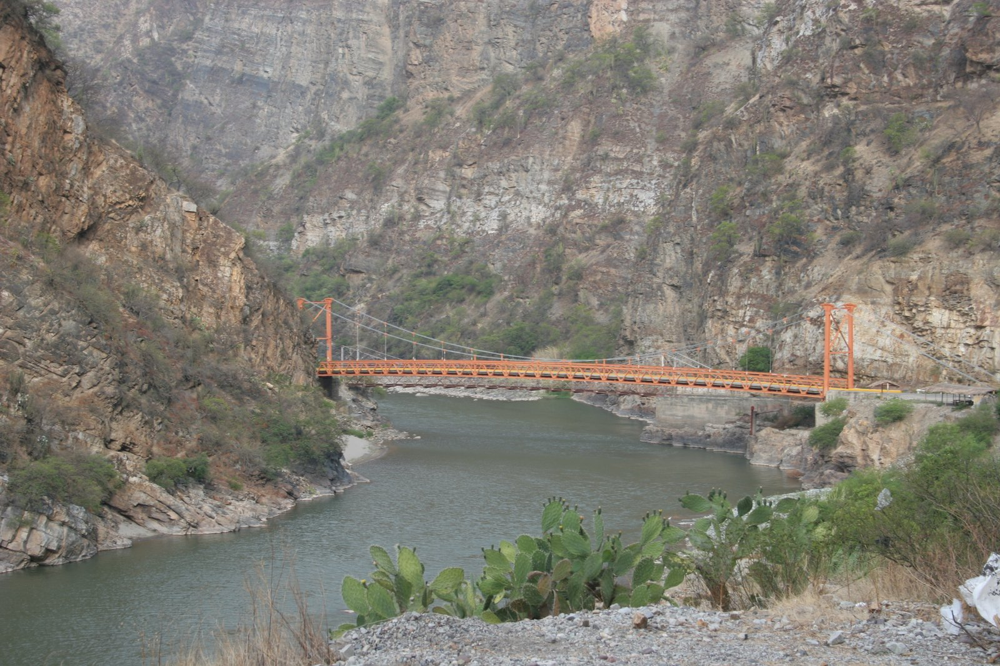
Photo: Peter Abrahamsen from Seattle, United States of America · Wikimedia Commons, CC BY-SA 2.0 Curahuasi
Curahuasi sits in a warm valley wrapped in fields of anise that scent the whole basin sweet, for this is Peru's anís capital. On the royal road between the Apurímac crossing and Abancay, it has always been a natural resting place, where the air softens and oranges ripen. The road bends north from here toward the Saywite stone.
-
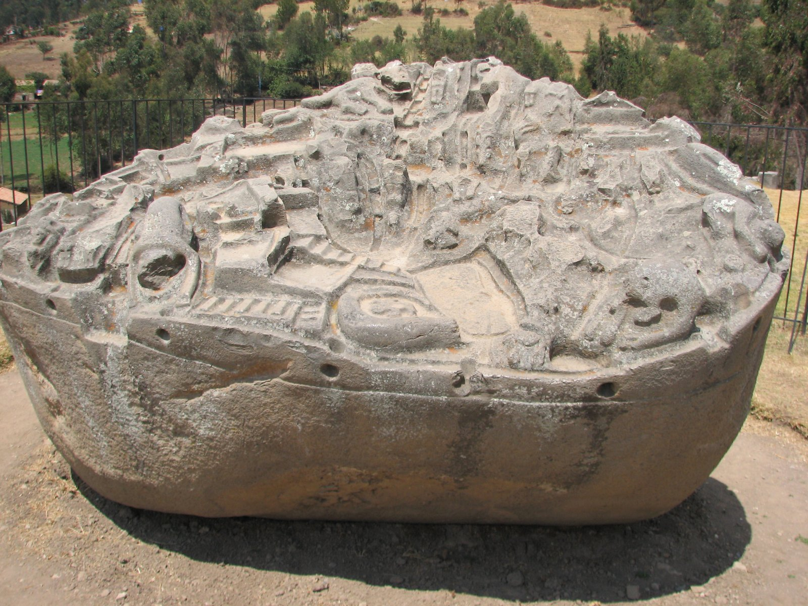
Photo: AgainErick · Wikimedia Commons, CC BY-SA 3.0 Saywite Stone, Curahuasi
Above Curahuasi rests the Saywite Stone, a single granite boulder carved with more than two hundred figures — terraces, canals, animals and reservoirs. Many read it as a three-dimensional model of the Inca world, used in water rituals by pouring liquid through its channels. The worn carvings sit on the road back toward the deep Apurímac canyon.
-
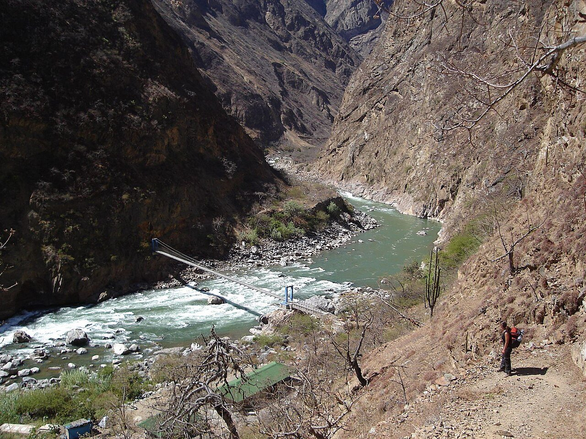
Photo: Nelo Pauselli · Wikimedia Commons, CC BY 3.0 Capuliyoc Lookout
From the Capuliyoc ridge the whole Apurímac canyon opens out, one of the deepest gorges on earth, plunging away in folds of green and dust. Far across the void, the terraces of Choquequirao catch the light on their distant spur. From here the trail drops thousands of metres to the river at the canyon floor.
-
Playa Rosalina
At the bottom of the canyon, a footbridge spans the roaring Apurímac at Playa Rosalina — the great speaker, whose name means the lord that talks. Sand flies and heat hang in this deep cleft, though the river's cold breath softens the air. The punishing climb to Marampata begins on the far bank.
-
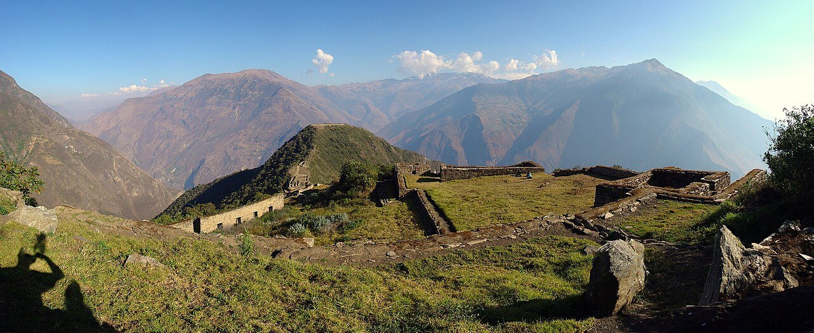
Photo: Martin St-Amant (S23678) · Wikimedia Commons, CC BY 3.0 Marampata
A relentless switchback climbs to Marampata, a cluster of farms and simple lodges clinging to the mountainside high above the river. From its terraces Choquequirao lies open across the valley, close enough to count its walls. Mules graze the slopes, and the lost city is only a short walk on.
-
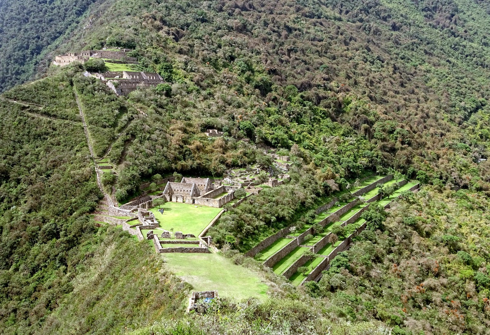
Photo: Sucram Yef · Wikimedia Commons, CC BY 2.0 Choquequirao
Choquequirao, the cradle of gold, sits at 3,050 metres in the Vilcabamba range above the roaring Apurímac. Often called the sister of Machu Picchu, only a fraction of it has been cleared, and its terraces are inlaid with white-stone llamas. Almost no one comes here — the only way in is on foot, and the long road out runs south and east.
-
High Pass above the Apurímac
The warm canyons fall behind as the trail climbs onto a windswept pass above four thousand metres, where the air thins and ichu grass bows flat under the wind. From the cairn at the top the snow peaks of the Vilcabamba range stand cold and clear to the north. A long descent runs east from here toward the open puna.
-
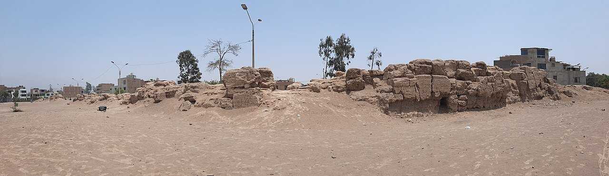
Photo: Shania Dayadi Solar Arotinco · Wikimedia Commons, CC BY-SA 4.0 Tungasuca
Tungasuca lies on the high plain of Canas, beside a quiet reed-fringed lagoon where flamingos wade the shallows. This was the seat of Túpac Amaru II, cacique of the district, who led the great uprising against colonial rule in 1780; his name still stirs the villages here. The herders' track runs on from the water toward Raqchi.
-
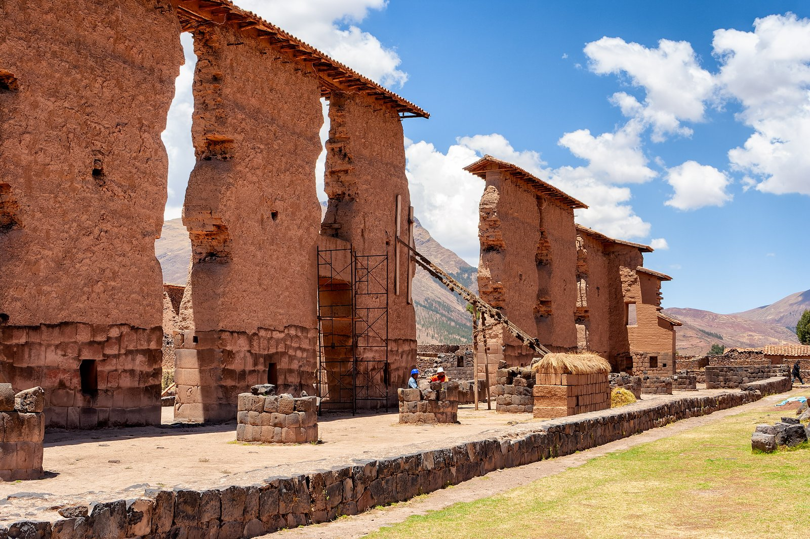
Photo: Hans Brian Brandsberg Berg · Wikimedia Commons, CC BY 2.0 Raqchi, Temple of Wiracocha
On the Qollasuyu road south of Cusco stands Raqchi, where the Temple of Wiracocha rises in a colossal central wall once nearly twenty metres tall — the largest roofed structure the Inca ever built. Rows of round stone storehouses stand around it, once filled with grain for the empire. The broad Vilcanota valley runs down from here toward Tinta.
-
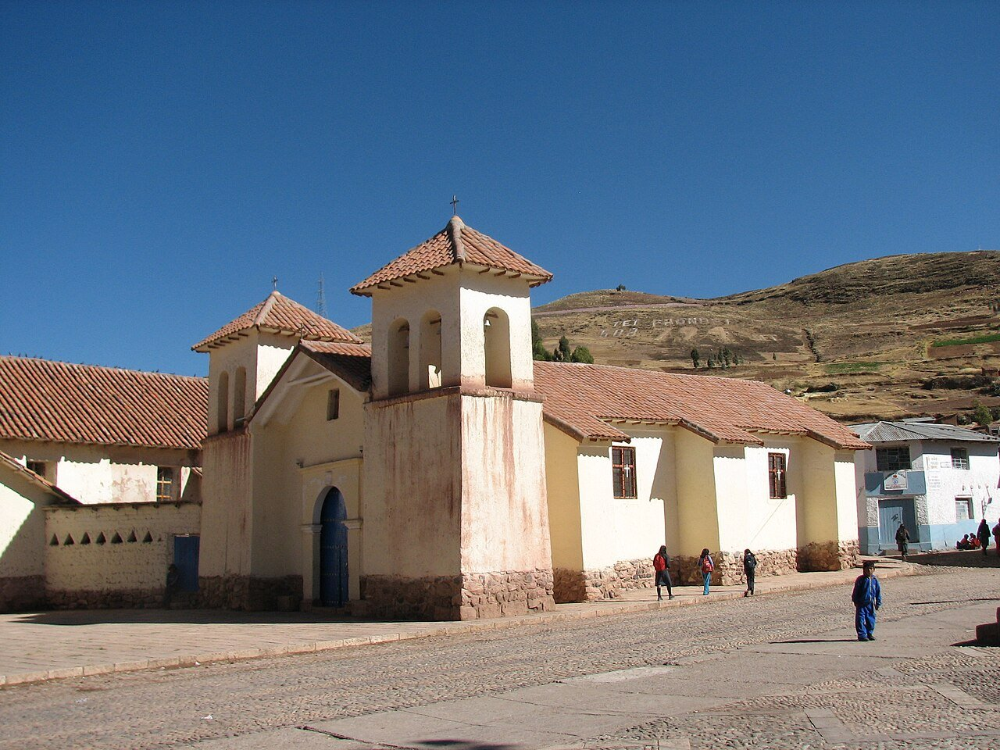
Photo: Ed88 · Wikimedia Commons, CC BY-SA 3.0 Tinta
Tinta is an old colonial town strung along the upper Vilcanota, where the river runs broad and cold between the ranges. Its long arcaded plaza and weathered church stand in the heartland of the Túpac Amaru rebellion, which flared here in 1780 and was crushed the following year. The valley floor opens on toward the four-lakes country.
-
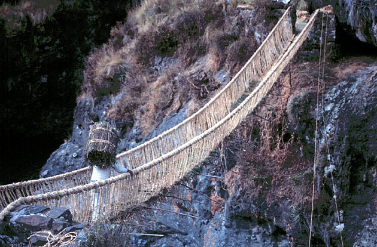
Photo: Rutahsa Adventures (via User:Leonard G.) · Wikimedia Commons, CC BY-SA 1.0 Q'eswachaka Bridge
The last living Inca rope bridge, Q'eswachaka, is woven from ichu grass across a 28-metre gorge of the Apurímac at 3,700 metres. Four Quechua communities still rebuild it together every June, exactly as their ancestors did for the Qhapaq Ñan. The grass deck sways above the churning river far below.
-
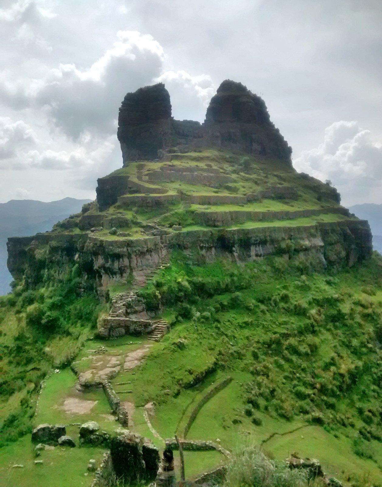
Photo: Pablo Rimachi · Wikimedia Commons, CC BY-SA 4.0 Waqrapukara
Waqrapukara crowns a crag whose twin horns give it its name, the horned fortress. Inca terraces and fine doorways cling to a summit that drops sheer into the Apurímac gorge on every side, a place built as much for awe as for defence. Beyond it the last stretch of road bends back toward Cusco.
-
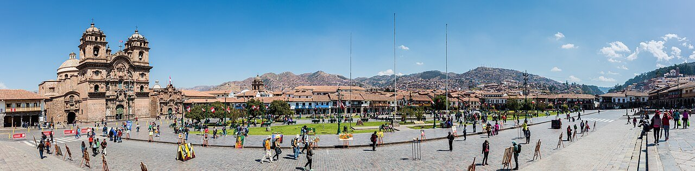
Photo: Diego Delso · Wikimedia Commons, CC BY-SA 4.0 Cusco, Plaza de Armas
The Plaza de Armas opens once more, six hundred kilometres of royal road closing the loop where the empire's four great highways met. Between here and here lie the terraces and salt pans, the temples of Wiracocha and the moon, and the last grass bridge still rewoven by hand — the whole Qhapaq Ñan drawn in a ring around Cusco, the navel of the Inca world.
Walking the Inca Road
Your watch is already counting these steps. Watch Walks spends them on the Inca Road, all 810 km of it, and hands you each landmark as you reach it. There's no route recording, no account and no ads. The Inca Trail is free; this one is a one-time purchase with no subscription.
Other trails in South America
- Inca Trail 43 km · Peru
- Alpamayo Circuit 64 km · Peru
- Cordillera Huayhuash Circuit 130 km · Peru
- Torres del Paine (O Circuit) 130 km · Chile